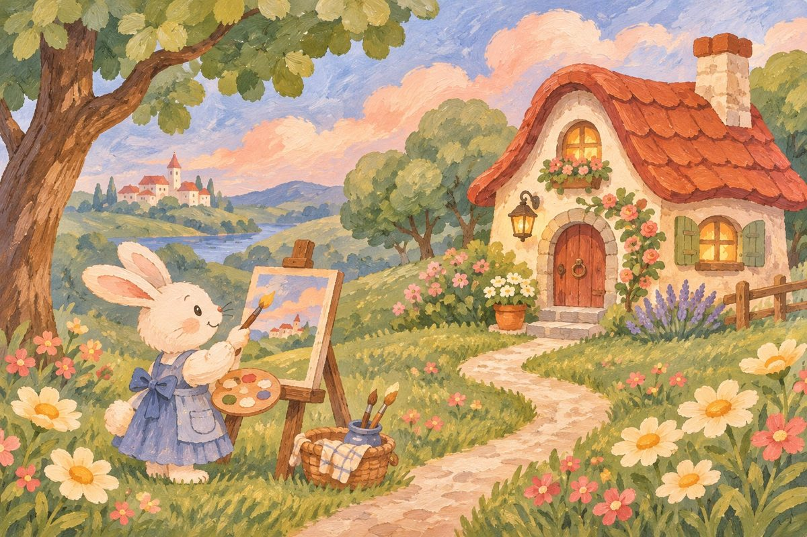

A LITTLE COLOR, A LITTLE WONDER
把喜欢的颜色，藏进画里。
从一张参考图开始，发现属于你的童话配色。

今天，也收集一点灵感。YOUR INSPIRATION
森林来信参考图画板
小兔正在整理颜色…
随手取色
换个颜色，换个故事
EXPERIMENT先选一个主色，再轻点色块换色，看看这幅画的另一种可能。
从一张参考图开始，发现属于你的童话配色。

今天，也收集一点灵感。先选一个主色，再轻点色块换色，看看这幅画的另一种可能。